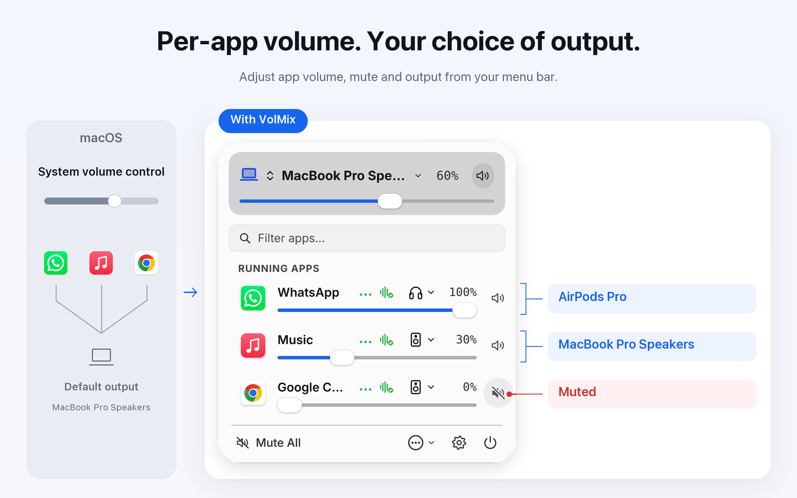
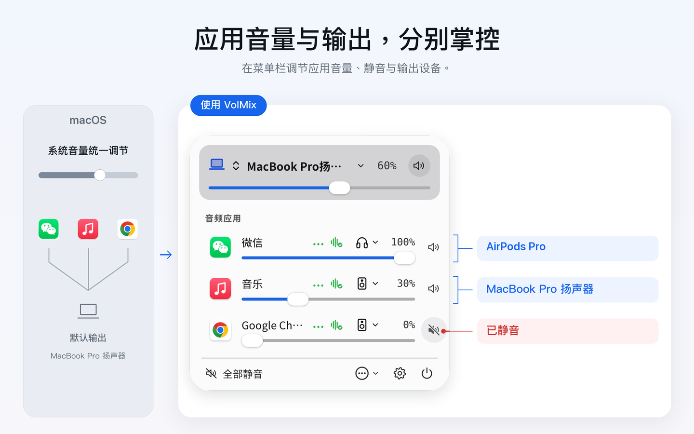

Every app, its own volume and its own speakers.
Set volume, mute and output device for each app from your Mac menu bar: meetings on headphones, music on speakers.


What it does
Independent audio
- Independent volume from 0% to 100%
- App mute and live audio indicators
Output devices
- Per-app output device: meetings on headphones, music on speakers. The system default output stays as it is; if a device disconnects, that app falls back to the default output
- System output selection in the same panel
Scenes
- Scenes remember each app’s output device
Before you start
Requires system-audio capture permission. Protected audio and some routing or devices may not work. Controls apps, not browser tabs; no amplification above 100%.
Use the Mac App Store listing for purchase, downloads, updates and current pricing.
Walkthrough
An existing bilingual walkthrough is available for reference. Its interface may show an earlier version.
Open walkthrough →每个应用，各自的音量，各自的输出设备。
在 Mac 菜单栏里为每个应用单独调音量、静音、选输出设备：会议留在耳机，音乐放在音箱。


可以做什么
独立调音
- 0%–100% 独立音量调节
- 应用静音与实时发声指示
输出设备
- 按应用选择输出设备：会议留在耳机，音乐放在音箱。系统默认输出保持不变；设备断开时，该应用会自动回到默认输出
- 在同一面板选择系统输出设备
场景
- 场景可以记住每个应用的输出设备
使用前了解
需要系统音频捕获权限。受保护音频、部分路由或设备可能不兼容。按应用而非浏览器标签页控制；不支持超过 100% 放大。
购买、下载、更新及当前价格请以 Mac App Store 页面为准。
操作演示
现有中英双语操作演示供参考，画面可能来自较早版本。
打开演示视频 →アプリごとに、音量も出力先も。
Mac のメニューバーから、アプリごとに音量・消音・出力デバイスを設定。会議はヘッドフォン、音楽はスピーカーで。
主な機能
アプリ別音量
- 0%〜100% の個別音量調整
- アプリごとの消音とリアルタイム発声インジケーター
出力デバイス
- アプリごとの出力デバイス：会議はヘッドフォン、音楽はスピーカーで。システムのデフォルト出力は変わらず、デバイスが切断されると自動的にデフォルト出力に戻ります
- 同一パネルでのシステム出力デバイス選択
シーン
- シーンにアプリごとの出力デバイスを保存
ご利用の前に
システムオーディオ録音/キャプチャ権限が必要です。著作権保護された音声や一部のルーティング・機器は対象外となる場合があります。ブラウザの個別タブではなくアプリ単位で制御し、100% を超える増幅には対応していません。
購入、ダウンロード、アップデートおよび最新価格は Mac App Store をご確認ください。
操作ガイド
参考用の操作ガイド動画をご覧いただけます（画面は旧バージョンの場合があります）。
動画ガイドを開く →앱마다 각자의 음량, 각자의 출력 기기.
Mac 메뉴 막대에서 앱별로 음량, 음소거, 출력 기기를 설정하세요. 회의는 헤드폰으로, 음악은 스피커로.
주요 기능
앱별 오디오
- 0%–100% 개별 음량 조절
- 앱 음소거 및 실시간 재생 표시
출력 기기
- 앱별 출력 기기: 회의는 헤드폰으로, 음악은 스피커로. 시스템 기본 출력은 그대로 유지되며, 기기 연결이 끊기면 해당 앱은 자동으로 기본 출력으로 돌아갑니다
- 동일한 패널에서 시스템 출력 기기 선택
장면
- 장면에 앱별 출력 기기 저장
시작하기 전에
시스템 오디오 캡처 권한이 필요합니다. DRM 보호 오디오, 특정 라우팅 또는 일부 기기는 호환되지 않을 수 있습니다. 브라우저 탭이 아닌 앱 단위로 제어되며 100% 초과 증폭은 지원하지 않습니다.
구매, 다운로드, 업데이트 및 현재 가격은 Mac App Store 페이지를 확인하세요.
시연 영상
참고용 작업 데모 영상을 확인하실 수 있습니다(화면은 이전 버전일 수 있습니다).
데모 영상 열기 →Jede App mit eigener Lautstärke und eigenem Ausgabegerät.
Stellen Sie Lautstärke, Stummschaltung und Ausgabegerät pro App direkt in der Mac-Menüleiste ein: Meetings über die Kopfhörer, Musik über die Lautsprecher.
Funktionen
App-Lautstärke
- Individuelle Lautstärkeregelung von 0 % bis 100 %
- App-Stummschaltung und Live-Audioanzeige
Ausgabegeräte
- Ausgabegerät pro App: Meetings über die Kopfhörer, Musik über die Lautsprecher. Die Standardausgabe des Systems bleibt unverändert; wird ein Gerät getrennt, wechselt die App automatisch zurück zur Standardausgabe
- System-Ausgabegeräte direkt im selben Menü wählen
Szenen
- Szenen speichern das Ausgabegerät jeder App
Vor dem Start
Erfordert Berechtigung zur System-Audioaufnahme. Geschütztes Audio oder bestimmte Ausgabewege werden möglicherweise nicht unterstützt. Steuert Apps, keine einzelnen Tabs; keine Verstärkung über 100 %.
Aktuelle Preise, Kauf und Downloads finden Sie im Mac App Store.
Demo-Video
Ein zweisprachiges Demo-Video steht zur Verfügung (Bildschirminhalte können von früheren Versionen stammen).
Demo-Video ansehen →Chaque app, son volume et sa sortie audio.
Réglez le volume, le silence et la sortie audio de chaque app depuis la barre des menus de votre Mac : les réunions dans le casque, la musique sur les haut-parleurs.
Fonctionnalités
Audio par app
- Contrôle de volume indépendant de 0 % à 100 %
- Mise en sourdine par application et indicateurs audio en direct
Sorties audio
- Sortie audio par app : les réunions dans le casque, la musique sur les haut-parleurs. La sortie par défaut du système ne change pas, et si un appareil est déconnecté, l'app revient automatiquement à la sortie par défaut
- Sélection du périphérique de sortie dans le même panneau
Scènes
- Les scènes mémorisent la sortie audio de chaque app
Avant de commencer
Nécessite l'autorisation d'enregistrement audio système. Les flux protégés ou certains périphériques peuvent ne pas être compatibles. Contrôle les applications, pas les onglets individuels ; pas d'amplification au-delà de 100 %.
Consultez l'App Store Mac pour l'achat, le téléchargement et les tarifs à jour.
Démonstration
Une vidéo de démonstration est disponible (l'interface peut provenir d'une version antérieure).
Voir la vidéo →Cada app, con su volumen y su salida.
Ajusta el volumen, el silenciado y el dispositivo de salida de cada app desde la barra de menús de tu Mac: las reuniones en los auriculares, la música en los altavoces.
Qué hace
Audio por app
- Regulación individual de volumen de 0 % a 100 %
- Silenciado por app e indicadores de audio en vivo
Dispositivos de salida
- Salida por app: las reuniones en los auriculares, la música en los altavoces. La salida predeterminada del sistema no cambia y, si un dispositivo se desconecta, la app vuelve automáticamente a la salida predeterminada
- Selección de dispositivo de salida en el mismo panel
Escenas
- Las escenas recuerdan el dispositivo de salida de cada app
Antes de empezar
Requiere permiso de captura de audio del sistema. El audio protegido o ciertas configuraciones de salida pueden no ser compatibles. Controla apps completas, no pestañas individuales; no amplifica por encima del 100 %.
Consulta la página de Mac App Store para descargas, actualizaciones y precios vigentes.
Demostración
Hay un vídeo de demostración disponible (las capturas pueden corresponder a una versión previa).
Ver vídeo explicativo →Cada app com seu volume e sua saída.
Ajuste volume, mudo e dispositivo de saída de cada app na barra de menus do Mac: reuniões no fone de ouvido, música nas caixas de som.
O que ele faz
Áudio por app
- Ajuste individual de volume de 0% a 100%
- Mudo por app e indicadores de reprodução em tempo real
Dispositivos de saída
- Saída por app: reuniões no fone de ouvido, música nas caixas de som. A saída padrão do sistema não muda e, se um dispositivo for desconectado, o app volta automaticamente para a saída padrão
- Seleção de saída do sistema no mesmo painel
Cenas
- Os cenários lembram o dispositivo de saída de cada app
Antes de começar
Requer permissão de captura de áudio do sistema. Áudios protegidos ou certas saídas podem não ser compatíveis. Controla aplicativos, não abas separadas do navegador; sem amplificação além de 100%.
Consulte a Mac App Store para download, atualizações e preços atuais.
Demonstração
Um vídeo de demonstração está disponível (imagens podem ser de versões anteriores).
Abrir vídeo demonstrativo →